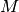
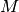
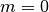
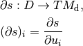

Tomographic acquisition geometries¶
This document is intended to introduce definitions and conventions used in ODL Geometry classes that represent tomographic acquisition geometries.
The first part introduces the abstract description of data as a function on a data manifold and then shows how this representation is simplified by using a parametrization of the manifold with a tuple of real numbers.
The second part then describes the implementation of these concepts in ODL.
Acquisition geometries are a central part of the odl.tomo subpackage.
They specify the physical setup of tomographic measurements and thus encode the geometric information that is needed to relate measurement data to the precise configuration of the system that gave rise to this data.
This geometric configuration defines the relation between a (usually unknown) spatial distribution of a physical quantity, e.g., an attenuation coefficient, to measured data, e.g., how many photons were counted per pixel for given source and detector positions in a tomographic scanner.
Geometry and data structure¶
Mathematically, the interaction between probing rays and physical matter is often modeled as integration along straight lines.
The corresponding mathematical operation, called ray transform, incorporates all geometry information since it is usually defined as a mapping from a space of functions on  to a space of functions on a manifold , the data manifold.
This data manifold is typically a subset of the manifold of all lines in , and the value of a function in a certain point on that manifold corresponds to the value of the integral along that line.
to a space of functions on a manifold , the data manifold.
This data manifold is typically a subset of the manifold of all lines in , and the value of a function in a certain point on that manifold corresponds to the value of the integral along that line.
For instance, in 2 dimensions and parallel beam geometry, i.e., a setup where all lines from a common direction are parallel, the ray transform can be defined as
where is a bounded domain, is the unit sphere in 2 dimensions and is the plane (=line) perpendicular to a vector  .
In this case, the data manifold is
.
In this case, the data manifold is
and encodes the subset of lines in  that are parallel to a unit vector in .
that are parallel to a unit vector in .
Representation using Euclidean domains¶
Function spaces (discretized or continuous) in ODL are, up to a few exceptions, defined on rectangular domains. Such spaces have a relatively simple structure and can be represented and manipulated very efficiently. Therefore ODL does not represent data directly as functions on manifolds, but rather as functions on a coordinate domain that paremetrizes the manifold.
For instance, in the 2D parallel beam example above, a unit vector can be parametrized by an angle , and a vector  on the line by a single number .
Such a representation additionally requires a convention for a translation between coordinates and points on the manifold, i.e., a map between the coordinate domain and the data manifold.
Such a map is usually called a parametrization or chart of the manifold.
on the line by a single number .
Such a representation additionally requires a convention for a translation between coordinates and points on the manifold, i.e., a map between the coordinate domain and the data manifold.
Such a map is usually called a parametrization or chart of the manifold.
In our example, we could thus redefine the ray transform as a map between Euclidean function spaces like this:
Here, and are intervals and
is a parametrization of the data manifold.

Parametrization of lines in 2D parallel beam geometry.¶
Geometries in ODL¶
The RayTransform in ODL is an Operator between DiscretizedSpace type discretized function spaces defined on rectangular domains.
The reconstruction space (“volume”), i.e., the domain of the ray transform, is naturally described as functions on a Euclidean space, and as derived above, the data space, i.e., the range of the ray transform, can also be defined in terms of Euclidean coordinates.
The missing component, which is the mapping from coordinates to points on the data manifold, is encoded in the Geometry class and its subclasses as described in the following.
The Geometry class¶
All ODL geometries derive from the abstract Geometry class that provides a basic structure.
Most attributes are intended to query for geometric information, e.g., source and detector positions and their orientations.
See the documentation of Geometry and Detector for details on the API.
Geometric definitions and conventions¶
Since one part of the geometry parameters usually refer to a system motion or transformation, they are called motion parameters. For instance, in a 2D parallel beam geometry, the single motion parameter is the angle of rotation around the origin. In general, they can refer to any encoding of the motion of the acquisition system. The initial state of the system corresponds to motion parameters .
Note
The above definition of the initial state does not imply that must be in the set of valid parameters – it merely means that definitions are understood as relative to zero.
To determine the spatial position of a detector point at a given configuration, both motion parameter  and detector parameter
and detector parameter  need to be provided.
need to be provided.
The vector pointing from the origin to a detector point is decomposed into two components:
a detector reference point only depending on the motion parameter (
Geometry.det_refpoint),an intrinsic shift within the detector only depending on the detector parameter (
Detector.surface).
The total displacement is then given by
where is a transformation of the detector reference system (in which is defined) to the coordinate system at motion parameter (in particular, , the identity matrix).
Note
Here and in the following, intrinsic transformations (such as shifts or rotations) mean transformations in the local coordinate system, while extrinsic transformations are relative to the global (“world”) coordinate system. The extrinsic counterpart of an intrinsic transformation can be computed as follows:
Suppose is an intrinsic transformation and the coordinate transform from world to local coordinates.
Then, the extrinsic variant  of
of  is given as , i.e., world-to-local transform, followed by the local transform , followed by the mapping back to world coordinates.
is given as , i.e., world-to-local transform, followed by the local transform , followed by the mapping back to world coordinates.
The in-detector shift above is given in local coordinates and should be translated to global coordinates.
Therefore, only the left part applies in that case.
In the 2d parallel beam example, corresponds to .
Since we assume that in its reference state the detector is aligned with the  axis, i.e., .
The detector point at is now given by
axis, i.e., .
The detector point at is now given by
The rotation matrix is exposed as Geometry.rotation_matrix.
Determining the initial configuration¶
In two dimensions, the default initial configuration of geometries in ODL is
If a different initial detector position is chosen, the initial detector axis is taken to be by default.
In three dimensions, there is no unique way to rotate one vector to another, which is why a convention is required in this case. The standard configuration in 3d is
for initial detector position and axes. Here the zero parameter in can have one or more components, and if the detector is only one-dimensional, we use only.

Default 3D coordinate system.
The configuration is chosen such that the detector axes coincide with the standard and  coordinate axes.¶
coordinate axes.¶
The transition to other initial states is done by rotating the whole system, and the rotation is either explicitly specified or computed to rotate one vector to another. Let be the vectors defining the initial configuration of a 3d geometry, and are their default values. The rotated configuration is given by
i.e., all vectors are transformed by the same rotation.
The matrix is chosen to rotate the first vector from its default to its actual value  , i.e.,
, i.e.,
Since the rotation is not uniquely determined, we choose to perform a rotation in the plane spanned by and , making use of Rodrigues’ rotation formula:
This construction becomes unstable when .
Therefore, if for a threshold  , we take .
, we take .
Below are some concrete examples for how this computation is done in practice.
For a list of implemented geometries, check the API documentation of the odl.tomo.geometry subpackage.
Parallel3dEulerGeometry¶
In this geometry, the motion parameters are two or three Euler angles, and the detector is two-dimensional and flat.
The handle for the initial rotation is the initial detector position, provided as det_pos_init parameter.
Its default value is .
Parallel3dAxisGeometry¶
This geometry, like all subclasses of AxisOrientedGeometry, has a fixed symmetry axis, provided as axis parameter.
Its motion parameter is a single rotation angle around this axis.
The initial orientation handle is the symmetry axis, with default value .
ConeBeamGeometry¶
The 3D cone beam geometry with circular acquisition curve is also an AxisOrientedGeometry.
Here, the symmetry axis is perpendicular to the source and detector circles (which can be different but lie in the same plane).
Its motion parameter is a single angle that parametrizes the position of the source on the circle, and the detector lies opposite of the source point.
As in Parallel3dAxisGeometry, the initial orientation is determined by the symmetry axis, with the same default.

Detector properties¶
The detector model in ODL is intended to be very flexible and able to encode many different types of detectors. Besides the obvious flat 2d detectors, it is also possible to implement curved detectors as used in medical CT, PET detector rings, Compton cameras, point-like transducers etc.
Nevertheless, names and concepts are centered around the surface-like detector model since it is most widely used in practice.
In particular, the function mapping a detector parameter to a point on the detector (e.g. two angles to a point on a curved detector surface) is called surface.
There are two methods that can be implemented for additional functionality, surface_deriv and surface_measure.
The former should be the derivative map

from  to the tangent bundle of the detector manifold .
This means that for each fixed
to the tangent bundle of the detector manifold .
This means that for each fixed  , the vectors are tangent vectors at the point .
These vectors form a local coordinate system for at if the matrix is not rank-deficient.
, the vectors are tangent vectors at the point .
These vectors form a local coordinate system for at if the matrix is not rank-deficient.
This derivative can be used to define a surface measure such that one can integrate over the detector surface with correct weights. For a one-dimensional detector and a single parameter , the measure is given by the length of the tangent vector,
On a two-dimensional detector with two parameters, the weight factor is the length of the cross product of the two canonical tangent vectors,
Thus, in these two cases, a default implementation for surface_measure is provided as above.
Subclasses that do not fall into these categories should override surface_measure.